Art & Graphics
I enjoy encorporating graphics into my scientific work wherever possible. Below is a selection of some commisioned figures and schematics that I have made predominantly using Inkscape, a vector graphics software. I have also included a selection of my own art pieces.
If you would be interested in a comissioned schematic or graphic, please do get in touch.
Graphics, Figures and Illustrations
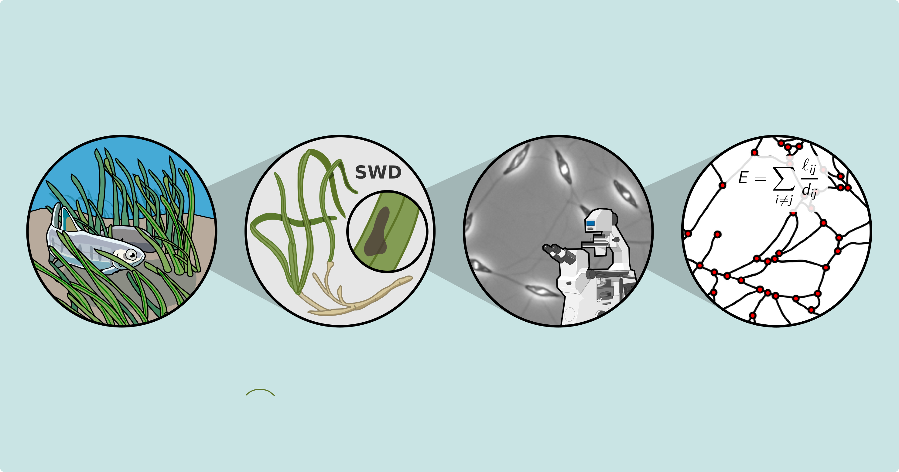
E5 DTP Project Proposal Graphical Abstract
Graphical abstract summarising the objectives of a project proposal for the NERC funded E5 Doctoral Training Programme
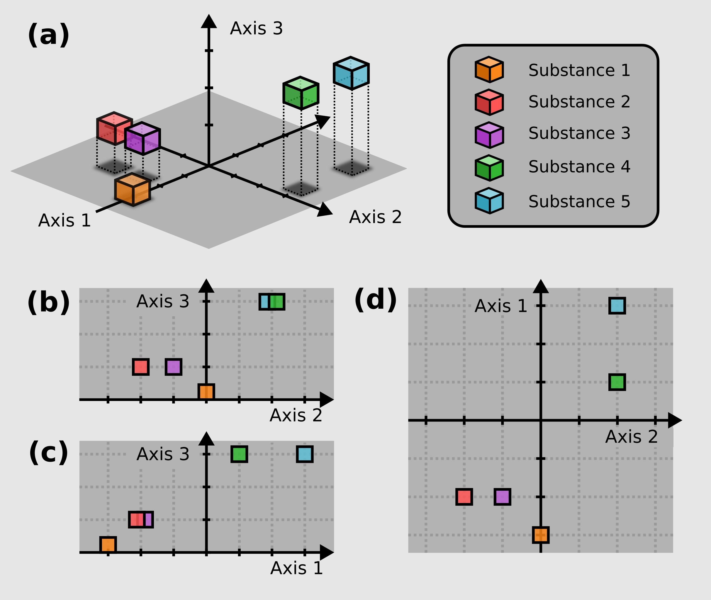
Industry Grant Schematic
Commisioned figure showing how various substances differ across a three-dimensional parameter space.
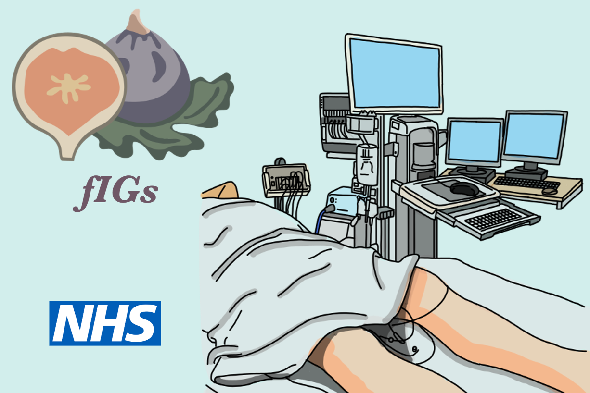
fIGs Project Logo and Figures
Logo commisioned for fIGs (Feasibility Study of Intra-vesical Gentamicin in the Prevention of Recurrent UTI in People with SCI) and illustrative schematics.
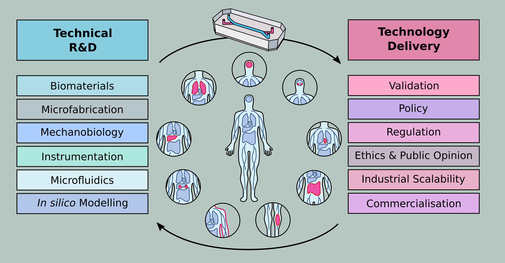
Grant Proposal Schematic
Commisioned grant proposal schematic.
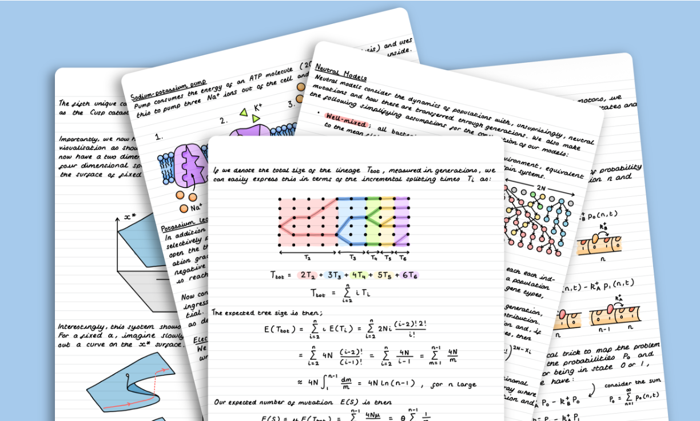
Biological Physics Illustrated Notes
Illustrated notes for the 4th Year Biological Physics course at Cambridge.
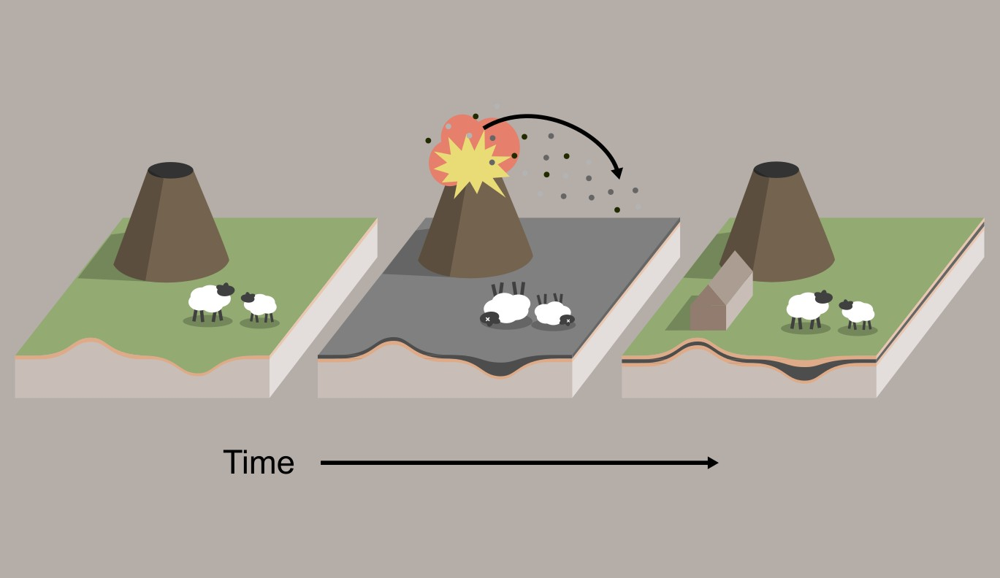
Tephra deposition schematic
Illustrative schematic showing the process of tephra deposition following volcanic activity.
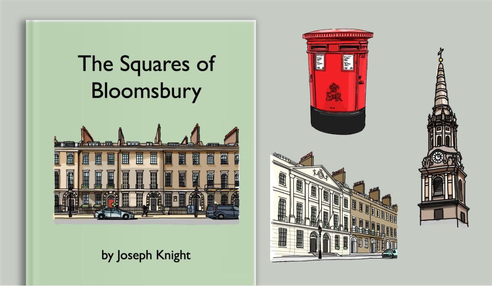
Illustrated Guide to the Squares of Bloomsbury
Illustrated booklet on the history of the squares of Bloomsbury in London.
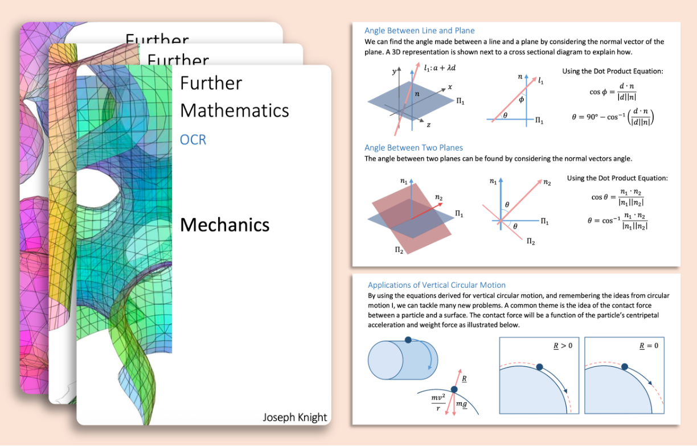
A-Level Mathematics Notes
Illustrated revision guide for the A-Level Mathematics and Further Mathematics OCR syllabus.
Painting/Art
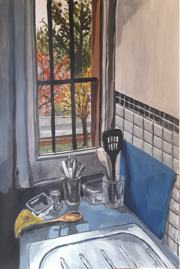
Selwyn Lockdown, 2020
This is the view out of my second year kitchen (or 'Gyp', in Cambridge lingo). I painted this in October 2020, when our corridor was in Covid isolation.
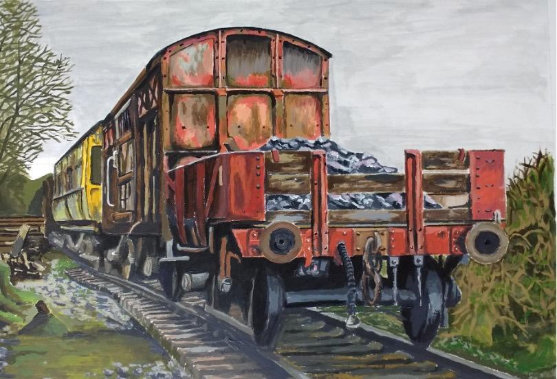
GCSE Final Project Piece, 2017
This was my final exam piece for GCSE Art. The project theme was Beginnings and Ends. The painting is of rolling stock at the sidings of the heritage railway at Chinnor.
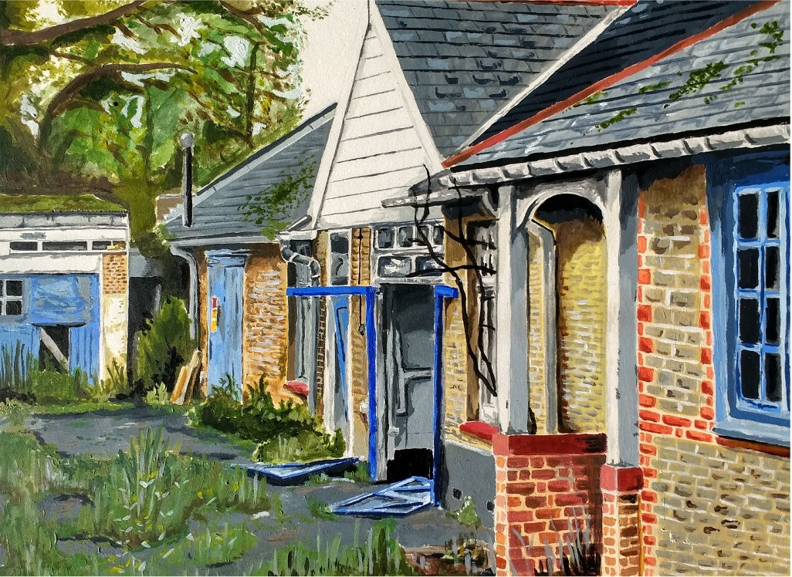
GCSE Project Piece, 2016
This acrylic is of an abandoned stable yard, the final piece of a project on the theme of Decay.
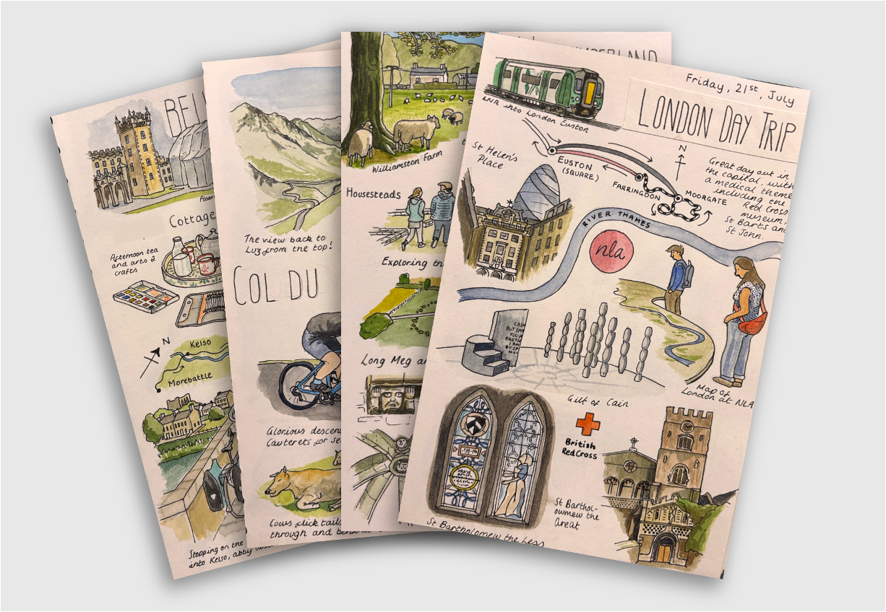
Watercolours, Ongoing
I also enjoy painting in watercolour, alongside pen and ink.